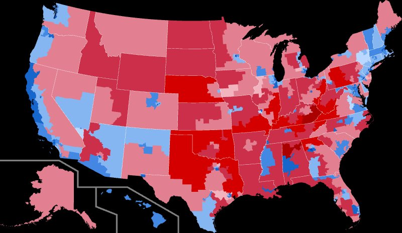

Ken Paxton built a career on scandal and survived every one of them. He beat an impeachment trial, a securities fraud indictment and years of accusations from his own staff that he traded state favors for personal help, and he still won the Republican nomination. Now Emerson Polling has him trailing Democrat James Talarico by several points in the race to succeed John Cornyn (Emerson Polling). VoteHub, a national forecaster, has moved further still, shifting its model to say Talarico is the narrow favorite in a state no Democrat has won statewide since 1994 (Houston Public Media).
That kind of number doesn't happen by accident in a state Republicans have run for two decades. Matt Mackowiak, the GOP consultant who ran Cornyn's failed primary campaign against Paxton, called it "uncharted territory" and said the feeling inside Republican circles is that this could be the most competitive statewide election in a long time.
We're in a little bit of uncharted territory here.
Matt Mackowiak, Republican consultantTexas Republicans spent the last two years redrawing congressional maps and pushing Democrats out of legislative leadership, the kind of consolidation that usually buys a party a decade of comfort (Houston Public Media). Instead they're watching voters revolt over data centers, transmission lines and an economy tied to Trump, and watching once-untouchable incumbents start attacking challengers who are gaining on them in the polls.
Michigan tells a version of the same story, with a twist. Emerson has Democrat Abdul El-Sayed and Republican Mike Rogers locked in a close race for Senate (Emerson Polling). But the Washington Post's read on the same numbers is less flattering to El-Sayed specifically: he's running behind where a generic Democrat would be expected to run in Michigan this cycle, a gap that suggests the state's competitiveness has less to do with El-Sayed's strength and more to do with the ceiling other Democrats are hitting nationally (Washington Post). That hasn't stopped national Democratic money from treating both races as winnable. Chuck Schumer's allied super PAC is doubling down on its Michigan spending, a bet that the seat is close enough to be worth the investment even with El-Sayed underperforming the top of the ticket (Axios).
Two states, two different problems for the party trying to hold them. Texas Republicans are bleeding from self-inflicted wounds. Michigan Democrats are winning despite their own candidate, not because of him.
Both parties now have to decide how much they believe their own polling, and the money that moves in the next two weeks will say more than the polls do.
Schumer's super PAC will keep spending in Michigan even if El-Sayed's numbers don't move. The doubling down reported this week isn't a response to a swing in El-Sayed's favor; it's a bet placed despite him running behind the generic Democrat in his own state. That kind of investment usually means the committee has decided the ceiling is a turnout problem, not a candidate problem, and the fix is money for ads and field operations rather than a change in message. Watch for whether Senate Majority PAC or its Michigan-specific vehicles file new independent expenditure reports with the FEC in the next two weeks; a second wave of spending, on top of what's already been confirmed, will mean Democrats are treating Rogers as beatable regardless of what happens to El-Sayed's favorability numbers between now and Election Day.
That same math cuts differently in Texas, where the problem isn't the candidate but the incumbent's baggage. Paxton's campaign will almost certainly escalate attacks on Talarico's legislative record over the next two weeks, the same shift Houston Public Media flagged when it noted once-untouchable incumbents have started slinging mud at challengers gaining on them. The mechanism is simple: when a scandal-tested candidate starts trailing in his own turf, the campaign pivots from defending the incumbent's record to disqualifying the challenger, because there's no version of "look at my record" that helps Paxton right now. Expect opposition research drops timed to Texas' early voting calendar, aimed less at persuading undecided moderates than at giving nervous Republican donors a reason to believe the race is still winnable.
National Republicans will start treating Texas as a defensive seat rather than a formality. That's the more structural shift. When the National Republican Senatorial Committee redirects money into a state it hasn't had to defend since before Talarico was born, it tells you the internal polling matches what Emerson and VoteHub are showing publicly, not just a favorable outlier. The tell to watch is ad spending data from AdImpact or similar trackers over the next 10 to 14 days: if NRSC or allied groups like the Senate Leadership Fund book new airtime in Texas media markets, that's the national party conceding what Mackowiak already said out loud. The stakes are asymmetric. If Texas Republicans have to spend real money defending Cornyn's old seat, that's money not going to competitive races in Ohio or North Carolina, and a single state's collapse starts reshaping the whole map two months out.
If national Republicans start treating Texas like North Carolina, the fight stops being about two Senate seats and starts being about where the map gets redrawn next.
A Texas retreat could pull the Senate Leadership Fund into a bidding war it didn't budget for. The Probabilities section already flagged the tell: NRSC or Senate Leadership Fund ad bookings in Texas media markets over the next two weeks. If that spending shows up, it opens a door that wasn't reachable a month ago, when Texas was a formality and every dollar of outside Republican money could go where races were already close. Ohio and North Carolina Republicans have built their campaigns assuming a certain level of national air cover. A forced defense of Cornyn's old seat means that cover thins somewhere else, and it thins fastest in the race where the incumbent has the least room to make up the difference on his own. That's not a hypothetical trade-off. It's the same pool of money being asked to do two jobs at once for the first time this cycle.
That reallocation is only visible because Paxton's baggage made Texas newly expensive to defend, and it's the second-order door: once Republican money is stretched, Democratic challengers in the states losing that air cover get a fundraising argument they didn't have in August. A Senate candidate in Ohio can now tell donors, credibly, that the national party is distracted, and distraction is the kind of opening down-ballot campaigns spend all cycle hoping for. Whether that argument raises real money depends on whether reporters and trackers like AdImpact actually document the Texas pullback in the next two weeks, the same window Probabilities already marked as decisive.
The same crowded fundraising environment could push Michigan Democrats toward a message correction instead of just a spending correction. Schumer's super PAC has so far answered El-Sayed's underperformance with money, not messaging, betting the gap is turnout rather than candidate quality. If Texas draws away Republican attention and dollars the way the first possibility describes, Michigan becomes, by comparison, a cheaper and more visible battleground for both parties' remaining resources. That's the kind of vacuum that invites a strategy adjustment; a super PAC with more room to spend has room to test the messaging fix it hasn't tried yet, rather than just running more of the same ads at a bigger volume. It's a door that only opens if the first one does. Nobody adjusts a strategy that's already working, and nobody adjusts one they think is failing for reasons outside their control, until the terrain around it actually shifts.
None of this requires either party to do anything it hasn't already shown a willingness to do. It requires Texas to keep costing what it's starting to cost.
Both parties are already telling donors and reporters a story about these races that the polling doesn't quite support, and the gap between the story and the number is the point.
Ken Paxton's campaign is framing his slide against Talarico as a name-recognition problem that ad spending will fix. That is the pitch Republican strategists are giving nervous donors: Talarico is a state legislator most Texans haven't heard of yet, and once the campaign defines him for voters through opposition research, the race snaps back to normal. It is a comfortable story because it doesn't require Republicans to reckon with the parts of Emerson's polling that have nothing to do with Talarico at all, the anger over data centers, transmission lines and an economy tied to Trump that Houston Public Media documented independent of who the Democratic nominee happens to be (Houston Public Media). A name-recognition problem is fixable with money and time, which is exactly why it's the version of events a scandal-plagued incumbent's campaign wants donors to believe over the alternative: that Paxton himself, after an impeachment trial and years of accusations from his own staff, is the reason the floor is falling out from under him.
That same instinct for a flattering frame shows up on the other side, in reverse. National Democratic operatives are selling Michigan as proof that the party's turnout machine, not its candidates, decides these races, pointing to Schumer's super PAC doubling down on El-Sayed as evidence the seat is winnable on infrastructure alone. That story serves the people telling it: a super PAC that keeps spending on a candidate who's underperforming the generic Democrat has every incentive to say the gap is a mobilization problem, because admitting it's a candidate problem means admitting the money might not fix it. The Washington Post's own read on the numbers cuts against that comfort, pointing to El-Sayed specifically as the drag, not the state's electorate.
Neither distortion is a lie built from nothing. Paxton's team has a real incumbency advantage to lean on, and Democratic operatives have a real history of turnout unlocking close Michigan races. But both stories exist to let the people telling them avoid the more uncomfortable diagnosis, that a scandal-tested Republican and an underperforming Democrat are each the actual variable dragging on their own party's numbers, not a fixable footnote around the edges of them. Money can paper over a lot in a campaign's final two months. It can't make a candidate someone he isn't.
![NTK]()